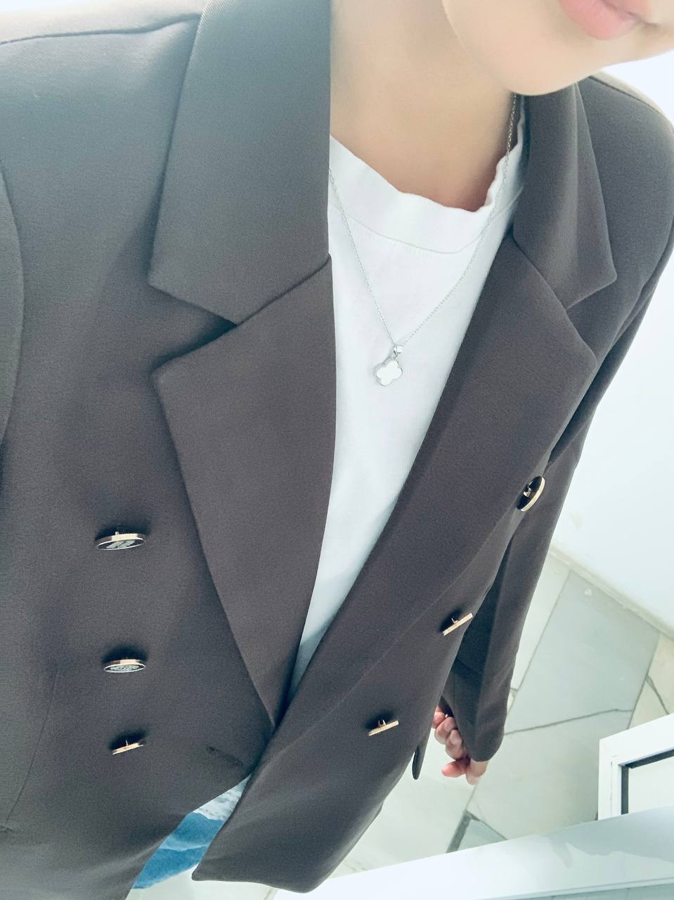
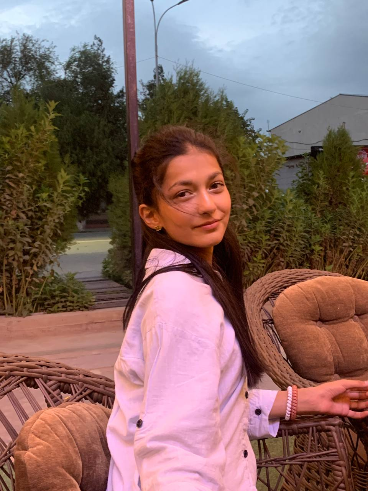

Загрузка портфолио...

Будущий Юрист & Веб-Разработчик
"Сочетаю технологии, целеустремленность и стремление к справедливости."

👋 Приветствую! Меня зовут Мадинабону.
Мне 14 лет, я учусь в школе №3 имени А.С. Пушкина. Моя главная цель в жизни — стать высококлассным специалистом и **поступить в престижный юридический университет**. Чтобы уверенно двигаться к этой мечте, я не просто усердно учусь, но и развиваюсь в самых разных направлениях.
📖 Гуманитарный фундамент и языки: В школе я уделяю особое внимание русскому языку и литературе, получая отличные оценки практически по всем предметам. Я свободно и грамотно разговариваю на русском языке, активно углубляю свои знания в английском, а также обладаю уникальным навыком — умею читать на арабском языке.
💻 Digital-навыки: В современном мире право и технологии идут рука об руку. Именно поэтому я активно изучаю IT и веб-разработку, создавая свои первые веб-страницы и программируя логику сайтов.
🏐 Спорт и характер: Уже полтора года я всерьёз занимаюсь волейболом. Спорт — это моё любимое хобби, которое не только поддерживает меня в отличной форме, но и развивает лидерские качества, выносливость, дисциплину и умение работать в команде.
"Я верю, что сочетание аналитического ума, знания языков, спортивного упорства и IT-технологий поможет мне стать юристом нового поколения, способным менять мир к лучшему!"
🎓 Моя цель: В данный момент я усердно занимаюсь и отдаю все силы обучению, чтобы успешно поступить в юридический университет и связать свою жизнь с правовой сферой.
📚 Профильные предметы: Я демонстрирую отличные результаты и глубоко изучаю предметы, необходимые для будущего юриста (история, правоведение и гуманитарные науки).
🗣️ Изучение языков: Сейчас я активно и целеустремленно учу иностранный язык, так как качественное владение языками — это важнейший навык для современного высококлассного специалиста и веб-разработчика.
🌸 Я новенькая в разработке, поэтому прямо сейчас у меня ещё нет готовых проектов или достижений. Но я активно строю фундамент для своего будущего! В моих планах:
🎓 Моя цель: В данный момент я усердно занимаюсь и отдаю все силы обучению, чтобы успешно поступить в юридический университет и связать свою жизнь с правовой сферой.
📚 Профильные предметы: Я демонстрирую отличные результаты и глубоко изучаю предметы, необходимые для будущего юриста (история, правоведение и гуманитарные науки).
🗣️ Изучение языков: Сейчас я активно и целеустремленно учу иностранный язык, так как качественное владение языками — это важнейший навык для современного высококлассного специалиста и веб-разработчика.
Интенсивный курс
Свободно владею русским языком. 7 месяцев усердно изучаю академический английский язык для будущих международных экзаменов и практикую чтение на арабском.
Школа №3 им. Пушкина
Углублённо изучаю гуманитарные науки и основы правоведения. Готовлюсь к поступлению в профильный юридический университет для защиты прав и справедливости.
Буду рада пообщаться с вами напрямую в Telegram (msmovas):